http://www.leocad.org/download.html Lego Digital Designer on Windows and
11 / 70
Use →← or click buttons to navigate
3D Interactive Media Development
Basic – VE Input and Output
Basic – VE Input and Output
To work with a VE, we need Input and Output to the system
The PC gives us a platform for the first VE.
The Mouse and Keyboard are the Input
The Screen is the output
Initial VE for PCs was the Desktop Paradigm
12 / 70
Use →← or click buttons to navigate
3D Interactive Media Development
2D User Interface – Xerox Parc
2D User Interface – Xerox Parc
Xerox Parc - 1970
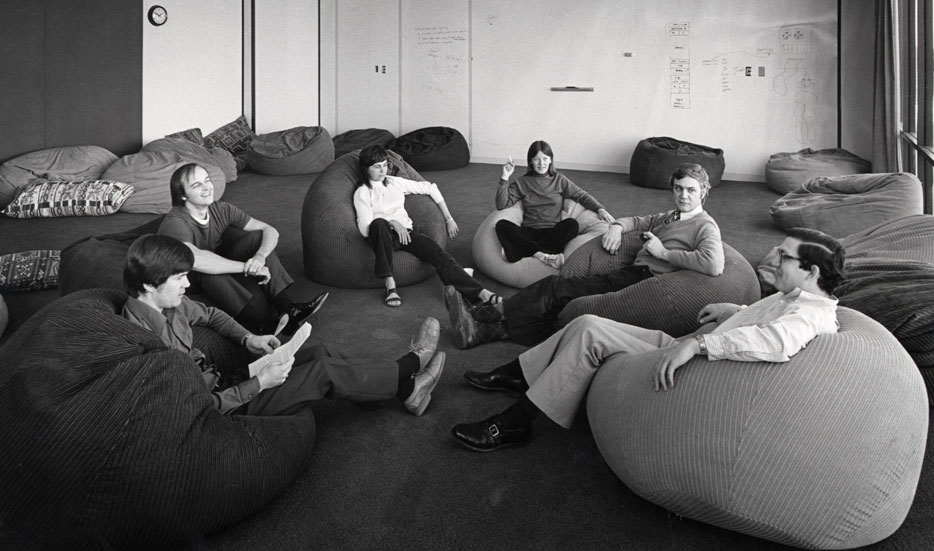
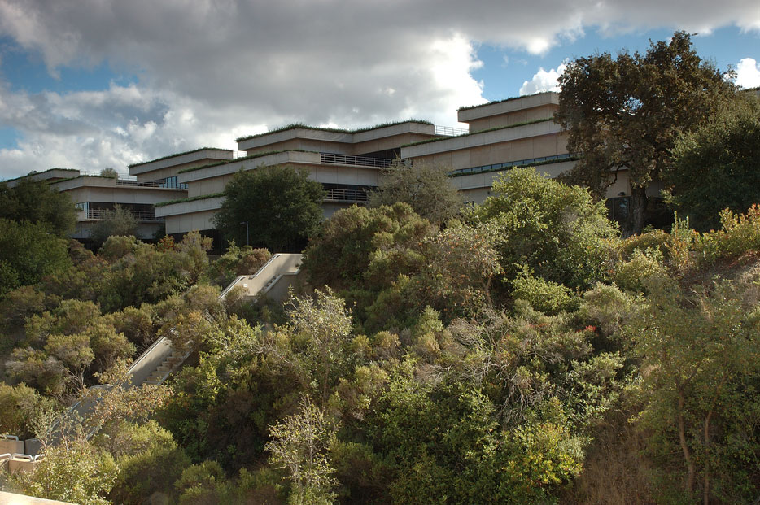
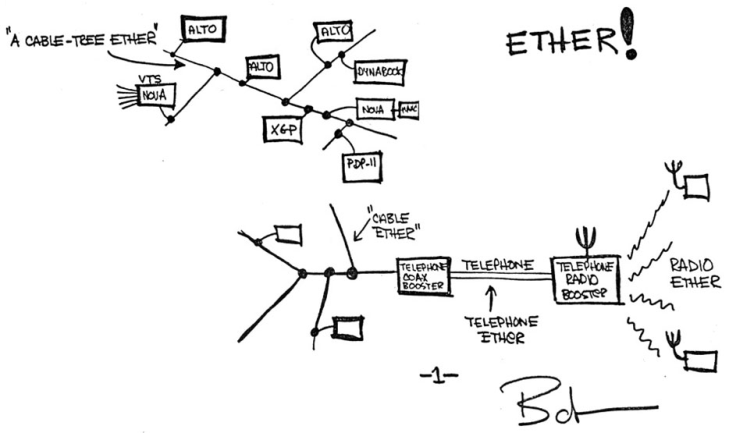
13 / 70
Use →← or click buttons to navigate
3D Interactive Media Development
2D UI Paradigm – The Desktop
2D UI Paradigm – The Desktop
Xerox Alto – 1973 - GUI OS - Advance from command line structure
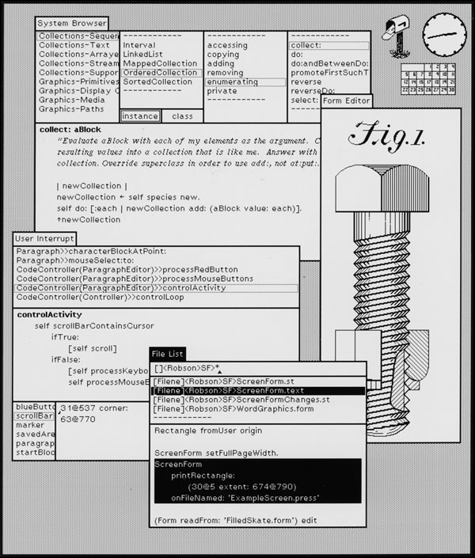
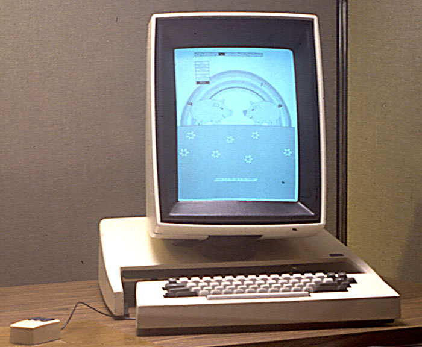
14 / 70
Use →← or click buttons to navigate
3D Interactive Media Development
2D User Interface Paradigm - WIMP
2D User Interface Paradigm - WIMP
WIMP – Window, Icon, Mouse, Pointer
A.K.A. GUI or Graphical User Interface – used to describe 2D
Characteristics
Characteristics:
Traditional Desktop Paradigm
Input Devices – Mouse and Keyboard
Output Devices – Monitor
Interaction techniques – Click, Drag and Drop
Interface Widget – Pull Down Menu
The Bin can change the system state of an object
15 / 70
Use →← or click buttons to navigate
3D Interactive Media Development
2D User Interface Paradigm - WIMP
2D User Interface Paradigm - WIMP
By Shmuel Csaba Otto Traian, CC BY-SA 3.0, https://commons.wikimedia.org/w/index.php?curid=31693853
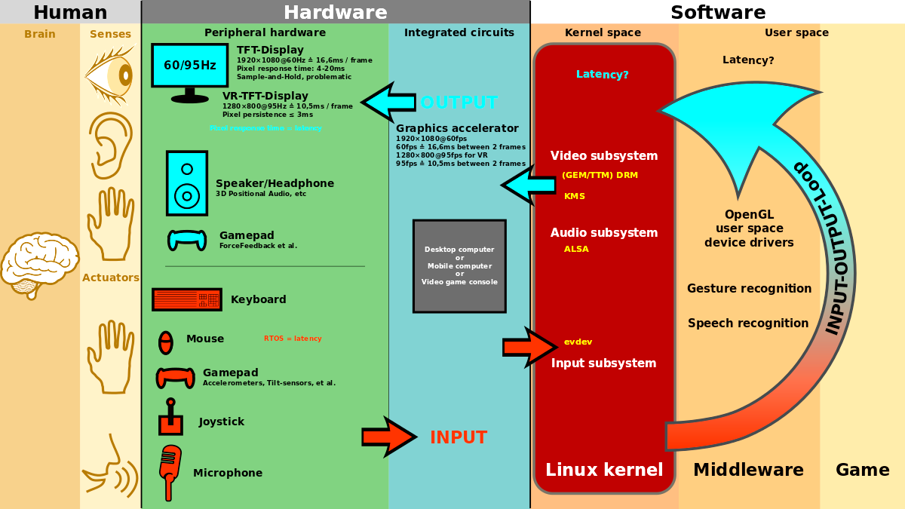
16 / 70
Use →← or click buttons to navigate
3D Interactive Media Development
With WIMP comes HCI (key to 3DUI)
key to 3DUI
Really the start of Human Computer Interaction (HCI)
Looking at
Looking at:
Bandwidth Disparity
Context
Psychology
Spatial Perception
Cognition
Task/Control Mapping Efficacy
Multi-Modal
Concerned with Design, Efficacy, Innovative methods and devices, and aligning with human naturalistic behaviour
17 / 70
Use →← or click buttons to navigate
3D Interactive Media Development
“Off the Desktop” - Non-Traditional UI
“Off the Desktop” - Non-Traditional UI
Some elements/concepts inappropriate for newer VEs
Mobiles need more graphical interfaces and less text and keyboard use
Some can be expanded upon to accommodate third dimension
Additional dimension is non-trivial matter – very complex issues arise
18 / 70
Use →← or click buttons to navigate
3D Interactive Media Development
“Off the Desktop” - Non-Traditional UI
Need
Need:
New Devices
New Metaphors
New Concepts
19 / 70
Use →← or click buttons to navigate
3D Interactive Media Development
Definitions - 3DUI
Definitions - 3DUI
3D Interaction – HCI where user’s tasks are carried out in a 3D spatial context with 3D input devices or 2D input devices with direct mappings to 3D
3D User Interface – A UI that involves 3D interaction
3D Interaction Technique – A method using hardware and software that allows a user to accomplish a task in a 3DUI
20 / 70
Use →← or click buttons to navigate
3D Interactive Media Development
Why 3DUI?
1. 3D Interaction is relevant to real world tasks
1. 3D Interaction is relevant to real world tasks:
VEs operate in a similar way to the real world
VEs provide an immersive presence
This allows use of natural interaction
Natural interaction rather than abstracted gives
Natural interaction rather than abstracted gives:
Lower Cognitive Load
Better Information Transfer
higher bandwidth
Intuitive
better quality
21 / 70
Use →← or click buttons to navigate
3D Interactive Media Development
Why 3DUI?
2. 3D Hardware and Software is mature
2. 3D Hardware and Software is mature:
Mobile Processing Devices
Fast Broadband
Highly networked software apps
Web as 3D platform – no plugins, downloads
Sensors, HMDs, Computer Vision and tracking
Binaural Audio
Code Example
Haptics (Phones)
22 / 70
Use →← or click buttons to navigate
3D Interactive Media Development
But….
Problems
Problems:
The VE is abstracted and relies on HCI, so…
Less opportunities than real world
Less intuitive than real world
Less Communication bandwidth
More chance of
More chance of:
information loss
Time Lag
Corruption
Tiring
Perceptual Mismatch
ALSO…
23 / 70
Use →← or click buttons to navigate
3D Interactive Media Development
Issues with 3D over 2D
Issues with 3D over 2D
Issues with Extra Dimension
3DUI needs Simultaneous Operations
The new Dimension brings freedom of movement
Coordinate Space Alignment
Scale, Registration
Input<>VE<>Output
Especially Problematic in AR
VE has Virtual Camera
Input has Real World POV + Scale
Output is varied and usually 2D
Tablet//Phone has In/Out Plane the same
2D into 3DVE
24 / 70
Use →← or click buttons to navigate
3D Interactive Media Development
And….
And….
2DUI is
Fast
Mature
Now intuitive
And
Conceptually and perceptually familiar
Even if compared to a good 3D UI, users can still interpret the 2DUI as more effective and efficient, even if proved otherwise. https://dl.acm.org/citation.cfm?id=142792
25 / 70
Use →← or click buttons to navigate
3D Interactive Media Development
Why go on? - Advantages
3D Applications should be useful. They can provide
3D Applications should be useful. They can provide:
Scenario Context
Gives added information layout
Immersion/Presence
Being There
Natural Skills
User has knowledge of world and interactions that are complex, these can be directly transferred.
Immediacy
Action to feedback has short distance.
Bandwidth
Action to feedback has rich information.
26 / 70
Use →← or click buttons to navigate
3D Interactive Media Development
Why go on?
Why go on?
And they are being developed anyway….
27 / 70
Use →← or click buttons to navigate
3D Interactive Media Development
Solution?
Solution?
Novel 3DUI Design
Based on Real World or other metaphor
Based on popular use – touch, etc.
Complexity of options and the VE themselves requires innovation in various areas
Complexity of options and the VE themselves requires innovation in various areas:
Psychology
HCI
Hardware
Software
Gamification
28 / 70
Use →← or click buttons to navigate
3D Interactive Media Development
Solution
Solution
We must focus on the design of UI with input from various disciplines – simple ones work, more complex will require time and study (or Computer Vision advances)
29 / 70
Use →← or click buttons to navigate
3D Interactive Media Development
Goals
Goals
Goals:
Performance – efficient, accurate, productive
Usability – Ease of use, learning, comfort
Usefulness – Meets goals, transparent so can focus on task.
Achieved by
Achieved by:
Reducing Users Cognitive Load (Control to Task Mapping)
Gives Extra Information – Higher Bandwidth and Quality
Gives Presence – Immersive
Ease of Use (Motor Coordination, Tiring or Clash)
Hou Wenjun Beijing University of Posts and Telecommunications China
30 / 70
Use →← or click buttons to navigate
3D Interactive Media Development
What is a 3DUI?
What is a 3DUI?
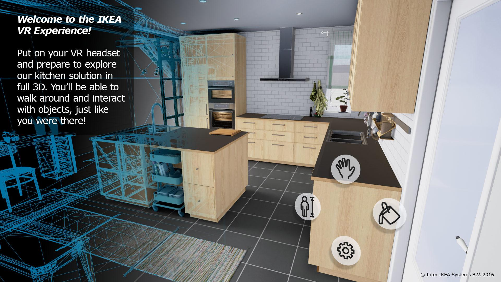
31 / 70
Use →← or click buttons to navigate
3D Interactive Media Development
Definitions – 3DUI (Again)
Again
3D Interaction – HCI where user’s tasks are carried out in a 3D spatial context with 3D input devices or 2D input devices with direct mappings to 3D
3D User Interface – A UI that involves 3D interaction
3D Interaction Technique – A method using hardware and software that allows a user to accomplish a task in a 3DUI
32 / 70
Use →← or click buttons to navigate
3D Interactive Media Development
Terminology – HCI, UI
Terminology – HCI, UI
Human Computer Interaction – Low Bandwidth Communication between humans and computers
This is imperfect and prone to misinterpretation, as computers only do what we tell them, and our language and interaction is some complex
User Interface – medium of communication between users and computers.
This is a translation system of sorts. The Computer language is quite raw and alien, an needs an abstraction layer itself. Our interface with this abstraction layer adds another of possible confusion.
33 / 70
Use →← or click buttons to navigate
3D Interactive Media Development
Terminology – Interaction Technique
Interaction Technique
Interaction Technique:
A method allowing the user to accomplish a task via the UI.
An interaction technique includes both hardware (I/O Devices) and software components.
The interaction technique’s software component is responsible for
The interaction technique’s software component is responsible for:
Mapping the information from the input device or devices into some action within the system
Mapping the output of the system to a form that can be displayed by the out device(s).
Doug A. Bowman, Ernst Kruijff, Joseph J. LaViola, Ivan Poupyrev
Addison Wesley Longman Publishing
USA
The Three-Dimensional User Interface
Hou Wenjun
Beijing University of Posts and Telecommunications
China
44 / 70
Use →← or click buttons to navigate
3D Interactive Media Development
3D Basic Concepts and Techniques
45 / 70
Use →← or click buttons to navigate
3D Interactive Media Development
3D Basic Concepts and Techniques
3D Basic Concepts and Techniques
Scalars, Points, Vectors
Three Basic types of entities to define geometric objects.
Defined from mathematical, programming and geometric
Perspective.
46 / 70
Use →← or click buttons to navigate
3D Interactive Media Development
3D Basic Concepts and Techniques
3D Basic Concepts and Techniques
Points
In 3D geometric systems, a point is a location in space
Only location, no size
Best to use a reference or coordinate system to define
47 / 70
Use →← or click buttons to navigate
3D Interactive Media Development
3D Basic Concepts and Techniques
3D Basic Concepts and Techniques
Code Example
Vectors (Lines)
Connect points with Line Segments
Also called vectors (direction and magnitude – velocity, force)
Have direction and magnitude (length)
Have Scalar (magnitude) values – real number
48 / 70
Use →← or click buttons to navigate
3D Interactive Media Development
3D Basic Concepts and Techniques
3D Basic Concepts and Techniques
Vectors and Affine Spaces
Abstract spaces for representing them
Linear (Vector) space – Vectors and Scalars
Scalar Field – combining Scalars with addition and multiplication
49 / 70
Use →← or click buttons to navigate
3D Interactive Media Development
3D Basic Concepts and Techniques
3D Basic Concepts and Techniques
Affine Spaces – Coordinate Space. Vector space without an origin. Vectors cannot be summed. Vectors with magnitude but no reference.
(Linear) Vector Space
A vector space is a mathematical structure formed by a collection of elements called vectors, which may be added together and multiplied ("scaled") by numbers, called scalars in this context. Vector point addition can create a new point. Vector is from two points
Euclidean Space
Fundamental space of geometry, defining physical world. Adds measure of size or distance and angle. 3D programs use this to make a representation of the world.
50 / 70
Use →← or click buttons to navigate
3D Interactive Media Development
3D Basic Concepts and Techniques
3D Basic Concepts and Techniques
A Vector Space is a structure composed of vectors and has no magnitude or dimension, whereas Euclidean Space can be of any dimension and is based on coordinates.
Euclidian Spaces are defined with size and distance between points, and can calculate angles between vectors.
Cartesian Coordinates can define Euclidian Space.
Coordinate Space is a system of describing the position of points in space using perpendicular axis lines that meet at a point called the origin. Any given point's position can be described based on its distance from the origin along each axis.
51 / 70
Use →← or click buttons to navigate
3D Interactive Media Development
3D Basic Concepts and Techniques
3D Basic Concepts and Techniques
Euclidean Space - adds measure of size or distance
Cartesian Coordinates
Coordinate System
Virtual World Space
Axes – X,Y,Z
2D is X,Y
3D is X,Y,Z
Some software have Y up, some Z
Z is typically described as into the screen and determines
rendering order of objects
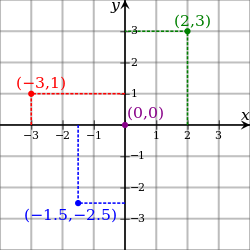
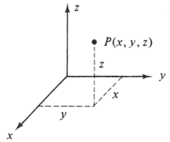
52 / 70
Use →← or click buttons to navigate
3D Interactive Media Development
3D Basic Concepts and Techniques
3D Basic Concepts and Techniques
Abstract Data Types
World Coordinate Space – 3D Virtual Space – Has Origin
Local Coordinate Space – Models – Has Pivot or Centre
Scaling – each program has its own virtual scale
World coordinates are absolute values that are related to the
origins of the world. They do not depend on any specific object in the world.
They are applied to all objects in the world indistinctly.
53 / 70
Use →← or click buttons to navigate
3D Interactive Media Development
3D Basic Concepts and Techniques
3D Basic Concepts and Techniques
Abstract Data Types
Camera Space (3D POV – point of view)
Orthographic/Perspective view
Screen Space (2D Display Space, Render Image)
Synthetic Camera Model – Perspective
Orthographic – Non-Perspective
54 / 70
Use →← or click buttons to navigate
3D Interactive Media Development
3D Basic Concepts and Techniques
3D Basic Concepts and Techniques
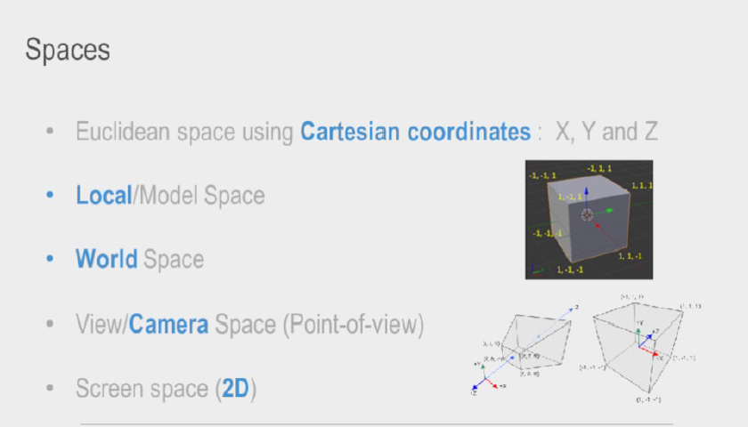
55 / 70
Use →← or click buttons to navigate
3D Interactive Media Development
3D Basic Concepts and Techniques
3D Basic Concepts and Techniques
Abstract Data Types
Can sometimes have correlation and calibration to the real world.(3d input, mocap, AR)
This can develop into a many layered issue depending on multiple devices or abstractions.
56 / 70
Use →← or click buttons to navigate
3D Interactive Media Development
3D Basic Concepts and Techniques
3D Basic Concepts and Techniques
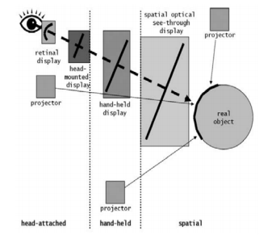
57 / 70
Use →← or click buttons to navigate
3D Interactive Media Development
3D Basic Concepts and Techniques
3D Basic Concepts and Techniques
Abstract Data Types
3D Objects defined by array of numbers
(cartesian coordinates for vertices)
Objects have their own local coordinate systems
Their transformation can be in relation to local or world coordinate systems.
Object Pivot – Local Transformation
Object Translate – World Transformation
58 / 70
Use →← or click buttons to navigate
3D Interactive Media Development
3D Basic Concepts and Techniques
3D Basic Concepts and Techniques
Terms
Vertex – Point in the 3D World
Vertices – Multiple Vertex
Triangle – Minimum face
Mesh – 3D object made of triangles
Wireframe – Mesh displayed without shading
59 / 70
Use →← or click buttons to navigate
3D Interactive Media Development
3D Basic Concepts and Techniques
3D Basic Concepts and Techniques
Wireframe Objects
Wireframe objects at their most basic
Code Example
Vertices (Array)
Lines (Can also be Curves)
Triangles (Polygons)
Vector3 (x,y,z) – Used for 3D position or Direction (Unity, Web3D)
60 / 70
Use →← or click buttons to navigate
3D Interactive Media Development
3D Basic Concepts and Techniques
3D Basic Concepts and Techniques
Wireframe Objects – Primitive Cube
Drawing Triangles for a cube
Cube is made of 8 vertices
Each face is made of 3 vertices
A cube is made of 12 faces
61 / 70
Use →← or click buttons to navigate
3D Interactive Media Development
3D Basic Concepts and Techniques
Polygon Shell Mesh
Polygon Shell Mesh:
Because the appearance of an object depends largely on the exterior of the object, boundary representations are common in computer graphics. Two dimensional surfaces are a good analogy for the objects used in graphics, though quite often these objects are non-manifold (Cannot exist in real world). Since surfaces are not finite, a discrete digital approximation is required: polygonal meshes (and to a lesser extent subdivision surfaces) are by far the most common representation, although point-based representations have been gaining some popularity in recent years.
62 / 70
Use →← or click buttons to navigate
3D Interactive Media Development
3D Basic Concepts and Techniques
Tessellation
Tessellation:
The process of transforming representations of objects, such as the middle point coordinate of a sphere and a point on its circumference into a polygon representation of a sphere, is called tessellation. This step is used in polygon-based rendering, where objects are broken down from abstract representations ("primitives") such as spheres, cones etc., to so-called meshes, which are nets of interconnected triangles.
63 / 70
Use →← or click buttons to navigate
3D Interactive Media Development
3D Basic Concepts and Techniques
Tessellation
Tessellation:
Code Example
Meshes of triangles (instead of e.g. squares) are popular as they have proven to be easy to rasterise (the surface described by each triangle is planar, so the projection is always convex); .[3]Polygon representations are not used in all rendering techniques, and in these cases the tessellation step is not included in the transition from abstract representation to rendered scene.
3DS Max Parametric Primitives to Editable Polys (sub-objects such as vertex, edge, etc…)
64 / 70
Use →← or click buttons to navigate
3D Interactive Media Development
3D Basic Concepts and Techniques
Subdivision
Subdivision:
A subdivision surface, in the field of 3D computer graphics, is a method of representing a smooth surface via the specification of a coarser piecewise linear polygon mesh. The smooth surface can be calculated from the coarse mesh as the limit of recursive subdivision of each polygonal face into smaller faces that better approximate the smooth surface.
Meshsmooth, Turbosmooth, subdivision in 3DS Max
65 / 70
Use →← or click buttons to navigate
3D Interactive Media Development
3D Basic Concepts and Techniques
3D Basic Concepts and Techniques
3D Objects recap
Transform – Scale, Position, Orientation
Vector3 – 3D position or direction (Programming)
World Transform – Absolute values related to the virtual
World origin
Local Transform – values relative to the objects own origin
Programming Transform – Vector3, will use in Unity
66 / 70
Use →← or click buttons to navigate
3D Interactive Media Development
3D Basic Concepts and Techniques
3D Basic Concepts and Techniques
3D Objects – File Formats
They have properties in the file format that they are saved in that define viewers, lighting, materials, shaders, textures and texture coordinates as well as the geometry.
67 / 70
Use →← or click buttons to navigate
3D Interactive Media Development
3D Basic Concepts and Techniques
3D Basic Concepts and Techniques
Fbx File Format
Fbx format further has geometry, materials, textures, lights, cameras, animation, deformations, physics, hierarchical rigs and relations, and inverse kinematics.
And more!
68 / 70
Use →← or click buttons to navigate
3D Interactive Media Development
3D Basic Concepts and Techniques
3D Basic Concepts and Techniques
3D Objects in OpenGL and Unity
These have a higher level of abstraction in real time for OpenGL, and for use in Unity3D
In these software architectures, they have functions and methods as well.
These are called GameObjects in Unity.
GameObjects can also be blank, as in reality they are just nodes…
69 / 70
Use →← or click buttons to navigate
3D Interactive Media Development
3D Basic Concepts and Techniques
3D Basic Concepts and Techniques
3D Objects
Unity is based on initializing GameObjects (nodes), all of which have fully adjustable Components (scripts), some of which are based on the Object’s properties, some of which are Unity features from their library, and some can be scripts you add.